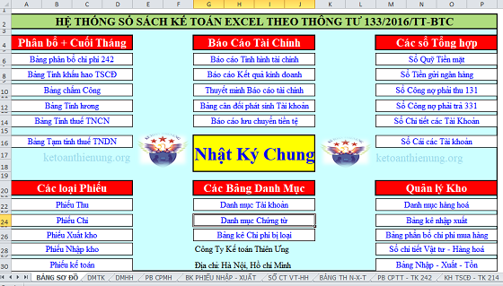

Mẫu sổ sách kế toán trên Excel theo Thông tư 200 và Mẫu số sách kế toán Excel theo Thông tư 133, đây là 2 mẫu hệ thống sổ sách kế toán trên Excel miễn phí gồm đẩy đủ các chứng từ kế toán, sổ sách kế toán và báo cáo kế toán (báo cáo tài chính).
Lưu ý: Đây là mẫu sổ sách kế toán theo Thông tư 200 và Thông tư 133 (Nhưng theo hình thức Nhật ký chung nhé), Mẫu sổ sách này gồm đầy đủ các bảng biểu nên có thể áp dụng cho tất cả các loại hình loại doanh nghiệp như: TM, DV, SX, XNK…
Tải mẫu số sách kế toán Excel theo Thông tư 200 và 133 tại đây:
Trường hợp bạn không tải về được thì làm theo cách sau:
Bước 1: Comment mail vào phần bình luận bên dưới
Bước 2: Gửi yêu cầu vào mail: ketoandieutam@gmail.com (Tiêu đề ghi rõ Mẫu sổ muốn tải)

Từ BẢNG SƠ ĐỒ các bạn có thể link đi tất cả các sổ, chứng từ, báo cáo, bảng biểu như:
- Sổ Nhật ký chung.
- Các loại phiếu như: Phiếu thu, chi, nhập kho, xuất kho.
- Danh mục tài khoản
- Danh mục chứng từ
- Danh mục hàng hoá
- Bảng phân bổ chi phí trả trước (242).
- Bảng tính khấu hao Tài sản cố định.
- Bảng chấm công, bảng tính lương.
- Bảng tính thuế TNCN, bảng tạm tính thuế TNDN.
- Bảng kê nhập xuất.
- Bảng Nhập - Xuất - Tồn kho hàng hóa.
- Bảng phân bổ chi phí mua hàng nhập kho.
- Sổ chi tiết vật tư hàng hóa.
- Bảng tổng hợp phải thu khách hàng (131).
- Bảng tổng hợp phải trả khách hàng (331).
- Sổ quỹ tiền mặt.
- Sổ tiền gửi ngân hàng.
- Sổ cái các tài khoản.
- Sổ chi tiết tài khoản.
- Bảng cân đối phát sinh tài khoản
- Bảng cân đối kế toán (Báo cáo tình hình tài chính)
- Báo cáo kết quả hoạt động kinh doanh.
- Báo cáo lưu chuyển tiền tệ.
- Bản thuyết minh báo cáo tài chính.
Sau khi tải phần mềm kế toán Excel miễn phí này về các bạn có thể xem hướng dẫn tại đây: Hướng dẫn cách lập sổ sách kế toán trên Excel
Kế toán Diệu Tâm xin chúc các bạn thành công!